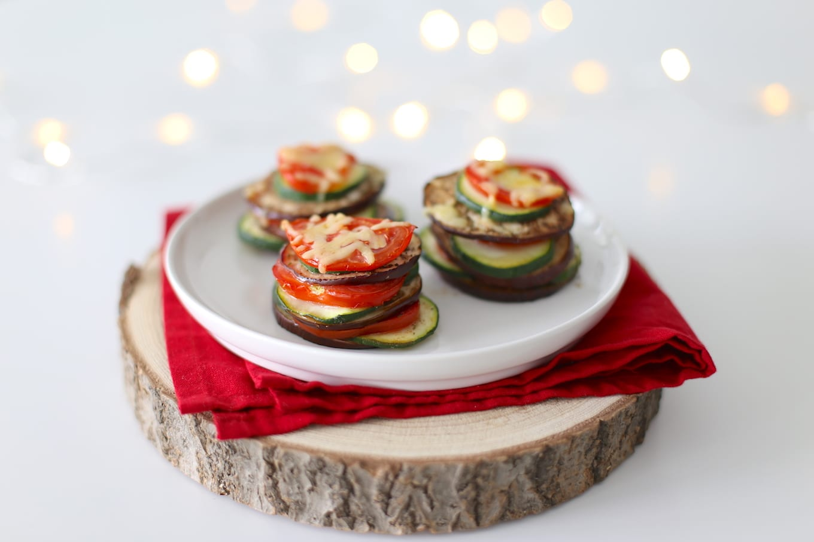

Dit groentetaartje is een prima voorgerecht voor een prachtig 3 gangen menu
Ingrediënten
- halve courgette
- 1 aubergine
- 2 tomaten
- 2 el olijfolie
- 1 tl tijm
- snufje zout en peper
- handje geraspte kaas
Bereidingswijze
- Verwarm de oven voor op 200 graden. Snijd de groenten in plakjes. Meng in een bakje de kruiden met de olie. Doe alle plakjes groenten in een grote kom en voeg de kruidenolie toe. Meng alles even goed door elkaar, daarna kun je beginnen met het maken van de taartjes. Pak een bakplaat met bakpapier. Eerst een plakje aubergine, dan 2 plakjes courgette, plakje tomaat
- ik herhaal deze stap 2x en dan eindig ik met een beetje geraspte kaas.
- Zet de groentetaartjes voor 20-25 minuten in de oven. Serveer de groentetaartjes bijvoorbeeld op een bedje rucola.
